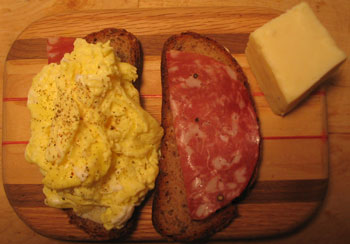

Boiling vortex eggs
Daniel Patterson’s egg article in the New York Times Magazine this weekend has completely changed the way I cook scrambled eggs. Once you try it, you will never go back to the sauté method. He calls them poached scrambled eggs; I call them boiling vortex eggs.

Those are my boiling vortex eggs on a sandwich with cheddar cheese and salami. In a past life, or a few days ago, I would have taken the eggs out of the refrigerator a while before I wanted to eat them to warm them up a bit. I would have melted some butter in my nonstick pan over low heat. Then I would have cooked the eggs very slowly for about 10 minutes. That was the best way I found to have fluffy eggs. I’d mix in some crème fraîche or blue cheese or both, and it would be just fine. I do not like when eggs are burnt or even crispy—they must have fluff.
Boiling vortex eggs guarantee fluff, and instead of 10 minutes, it takes 20 seconds. Really, it only takes 20 seconds. Bring a few inches of water to a low boil. While that’s heating, crack two eggs per customer in a strainer over the sink to let the thin white drain out, and pour the rest into a bowl. Leave the strainer in the sink. Beat the eggs vigorously with a fork or a whisk. When the water is boiling, add a few pinches of salt, and stir the water quickly in a clockwise motion until you’ve created a boiling vortex. Slowly pour the eggs in. Cover the top and count to 20, then pour the contents of the pan into the strainer. Press the eggs delicately to expel excess water, adorn as you wish, and serve.
I used nothing but salt and pepper on my boiling vortex eggs. No fat at all is needed for these babies, which I guess makes them a pretty healthy alternative to traditional scrambled eggs. The result is fluffy and delectable. You can chew with your tongue. Soft food is in, everybody, and we all need to get with the program.
Comments
Make sure you wash the sieve between the raw egg stage and the cooked stage—helps reduce salmonella danger.
That is wise advice. Although, null, wouldn’t the boiling water that comes out of the pot with the eggs wash that danger away?
Beating the eggs while they’re in the strainer? Why don’t they just run down the sink? I’ve got to try this. It sounds like it would help to have someone else in the kitchen to make toast and heat the plates while you’re whipping water into a vortex, etc. and expelling it gently.
Mommy
No! Beat the eggs in a bowl. Strain them and then pour the yolks and whites into a bowl. Yikes!
Yes, that would be helpful to have another person help.
Ahh, here’s my answer! Glad these worked out for you. I have to confess that Patterson’s article (and recipe) had me stumped.
This is the world’s greatest way to make scrambled eggs. I didn’t even know I liked scrambled eggs until I tried making them this way.
That’s great to hear! It’s like eating egg-flavored air—I love it.
My dad used to make these when we were little, but he called them coddled eggs. They were like boiled/scrambled eggs and cooked up nice and fluffy and stayed together. But heck, they cooked everything in water…even our hot shredded wheat with butter and salt. All of the nice breakfasts we had when we were little!
Add a comment